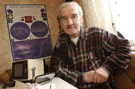
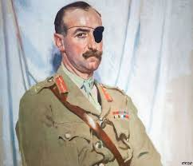
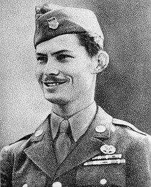
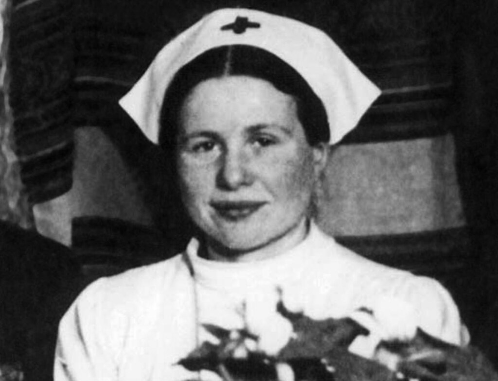
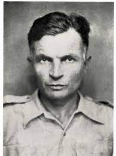
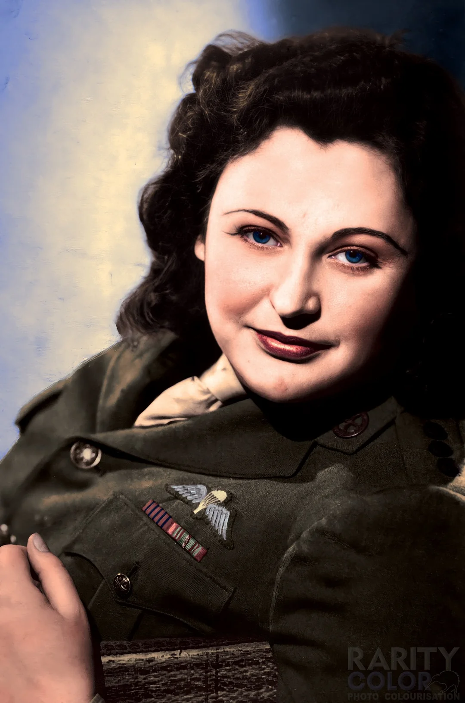
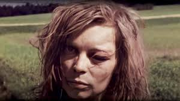
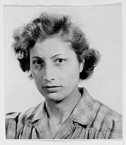
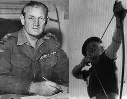
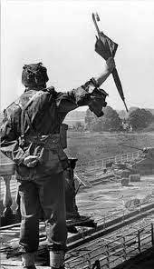

Because of a decision he made in 1983 resulting in an averted retaliatory nuclear strike, Petrov is often credited as "the man who saved the world.
Lieutenant-General Sir Adrian Paul Ghislain Carton de Wiart, VC, KBE, CB, CMG, DSO was a British Army officer of Belgian and Irish descent. Check dis nigga out.
Desmond Thomas Doss (February 7, 1919 - March 23, 2006)[1] was a United States Army corporal who served as a combat medic with an infantry company in World War II. Due to his religious beliefs, he refused to carry a weapon.
Irena Sendler was a Polish social worker who, at great personal risk during World War II, rescued around 2,500 Jewish children from the Warsaw Ghetto by smuggling them to safety and providing them with false identities.
Charles Hazlitt Upham, a New Zealand soldier and the only combatant ever awarded the Victoria Cross twice, is hailed as a hero for his unmatched courage and leadership in World War II, repeatedly risking his life under heavy fire to lead attacks, rescue comrades, and continue fighting despite severe wounds.
Simon Weston MBE, a Welsh Guardsman who survived the 1982 bombing of RFA Sir Galahad with severe burns, is honoured as a hero for his extraordinary resilience in overcoming life‑changing injuries and dedicating his life to inspiring others and supporting wounded veterans through decades of charitable work.
"The White Mouse," Nancy Wake, a legendary spy, evaded capture by the Gestapo while leading resistance fighters in France. Her daring feats and unyielding courage made her one of the most decorated women of World War II.
What happened to the 'Lost German Girl' footage from 1945? Who was she, and why did her brief appearance in an iconic WWII-era film capture the attention of historians and the public alike?
What happened to the 'Lost German Girl' footage from 1945? Who was she, and why did her brief appearance in an iconic WWII-era film capture the attention of historians and the public alike?
Nicknamed “Mad Jack” or “Fighting Jack” Churchill, he believed, “Any officer who goes into action without his sword is improperly dressed.”
Also known as Digby, was an eccentric and highly decorated British Army officer famous for carrying an umbrella into battle and his conspicuous bravery during World War II.
